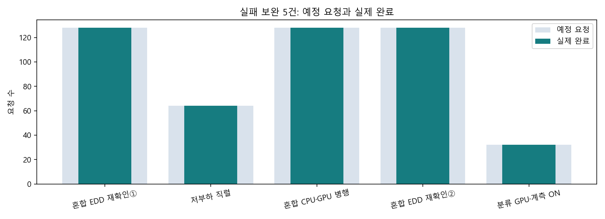

이번 보완 5/5 정상 · 480/480 완료. 원 미실행 L64는 기존 온도 조건 미충족으로 보존.
각 진단의 시작 상태는 다릅니다. AP 수치로 정책 우열을 주장하지 않습니다. 에너지 J 미판정 · 표면온도 미검증.
보고서보완5 상세원40원자료 ZIP공개 재계산 검증
| 진단 | 상태 | 완료 | 기준 AP | 긴급 P95 | 최고 AP |
|---|---|---|---|---|---|
| 혼합 EDD 재확인① | COMPLETE_TRACE_RECOVERED | 128/128 | 28.0℃ | 9010.507773ms | 29.9℃ |
| 저부하 직렬 | COMPLETE_TRACE_RECOVERED | 64/64 | 28.2℃ | 279.714233ms | 29.4℃ |
| 혼합 CPU·GPU 병행 | COMPLETE_TRACE_RECOVERED | 128/128 | 28.4℃ | 1452.688925ms | 30.6℃ |
| 혼합 EDD 재확인② | COMPLETE_TRACE_RECOVERED | 128/128 | 28.4℃ | 9086.386928ms | 30.1℃ |
| 분류 GPU·계측 ON | COMPLETE_TRACE_RECOVERED | 32/32 | 28.4℃ | 274.375773ms | 28.8℃ |
기존 실패 기록을 지우거나 독립 확인의 성공으로 교체하지 않았습니다.